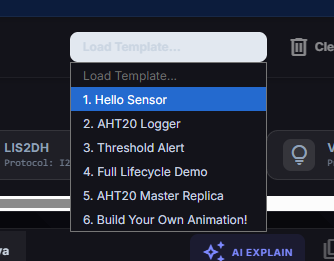
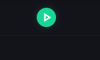
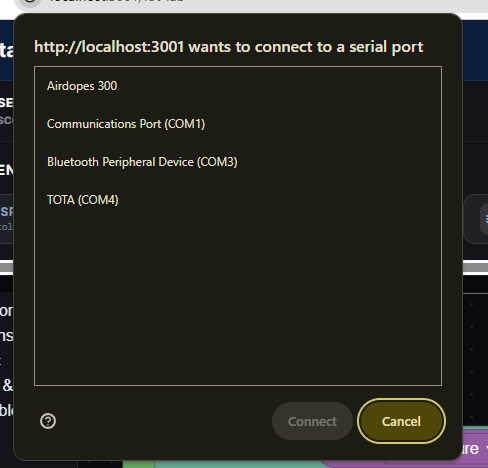
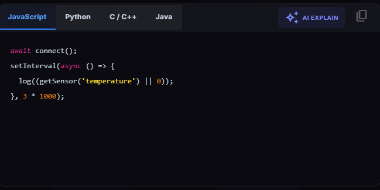
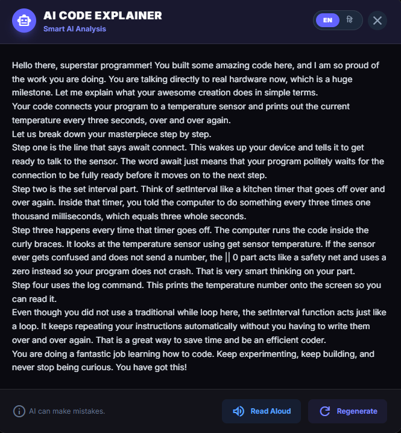

Welcome to the IoT Sensor Lab!
This lab lets you connect real physical sensors to your browser, write logic using visual blocks, and watch live data stream in real-time — no complicated software needed. Follow the steps below carefully to run your first experiment.
Load a Template
Start by loading a ready-made example for your sensor. Click the "Load Template..." dropdown in the top toolbar and select the template that matches your experiment (e.g. Hello Sensor, AHT20 Logger, Threshold Alert).
The template will automatically fill the block editor with the right blocks for your chosen sensor!
- Hello Sensor — Quick start: reads and displays sensor values
- AHT20 Logger — Logs temperature and humidity over time
- Threshold Alert — Triggers an alert if value exceeds a limit
- Full Lifecycle Demo — Shows connect, read, log and stop

Press the Green Run Button
Once your blocks are ready (or you've loaded a template), click the green Play button in the top toolbar to run your experiment.
This compiles your block logic and begins executing it. The button will turn into a red Stop button while running.

If no hardware is connected yet, the system will still compile and may prompt you to connect. Connect your USB device first for best results.
Select Your Serial Port
Your browser will show a popup asking which port to connect to. This is the USB serial connection to your physical sensor board.
- Look for a port labelled TOTA, CH340, CP210x, or a COM port that appears when your device is plugged in
- Select it from the list and click Connect
- Bluetooth devices (like "Airdopes") are NOT your sensor — ignore those

If you don't see your sensor in the list, unplug and re-plug the USB cable, then try again. Make sure you're using a data USB cable (not a charging-only cable).
Watch Live Sensor Data
Once connected, the Live Sensor Data terminal at the bottom right will start showing real values streaming from your physical sensor in real-time.
You can also switch between different code views in the Code Preview panel on the right. Use the language tabs to view the same logic in:
- JavaScript — The language that runs in the browser
- Python — Great for data science scripts
- C / C++ — Used for microcontrollers like Arduino
- Java — General-purpose programming

Get an AI Explanation of Your Code
Click the ✦ AI EXPLAIN button (top right of the Code Preview panel) to get a friendly, step-by-step explanation of what your code is doing — written in simple language anyone can understand!
- The AI breaks down each block of your logic in plain English
- Use Read Aloud to hear the explanation spoken out loud
- Use Regenerate to get a fresh explanation or a different style
- Switch between languages using the EN toggle at the top of the explainer

Stop and Disconnect
When you are done with your experiment:
- Click the red Stop button to halt all running logic
- Click Unplug in the toolbar to safely disconnect from the hardware
- Use Clear to reset the block editor for your next experiment
Pro Tip: You can always come back to this guide by clicking the Tutorial button in the IoT Lab toolbar!